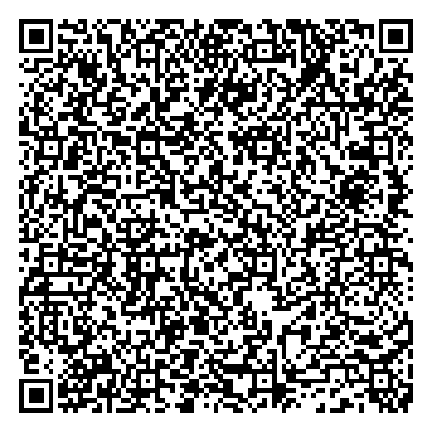

Generating a QR Code
This page is a step-by-step, implementer-facing walkthrough of how a signed health certificate becomes a QR code on a piece of paper or a phone screen, and how a verifier turns that QR code back into trustworthy data.
The container, the signature and the transport encoding are the same for every
GDHCN trust domain, and are specified normatively in the
HCERT Specification. What changes from one use case to the
next is only the payload: which logical model goes inside the hcert claim,
and under which subclaim. Everything after that choice is mechanical.
Where this page and the HCERT Specification appear to differ, the HCERT Specification is authoritative.
1. The pipeline at a glance
Step 1 Select payload type DVC, for this walkthrough
Step 2 Assemble payload { "n": ..., "dob": ..., "vx": {...} }
Step 3 Wrap in CWT claim set { 1: iss, 6: iat, 4: exp, -260: { -6: payload } }
Step 4 Serialise as CBOR binary
Step 5 Sign as COSE_Sign1 (ES256) binary, tag 18
Step 6 Compress with ZLIB/Deflate binary
Step 7 Encode as Base45 ASCII
Step 8 Prefix context identifier "HC1:" + ASCII
Step 9 Render QR (Alphanumeric, EC Q) image
Steps 3 to 9 never vary with the payload. A verifier runs the same list upwards.
Live examples. Each step below has a live example that runs in your browser, using a WebAssembly build of an open-source HCERT library (litlfred/smart-trust-tools). They share one certificate: edit the payload in Step 2 and every later step re-runs. The signing key below was just generated by your browser. It cannot leave the page, and its certificate is a self-signed test DSC on no trust list, so nothing made here verifies anywhere else.
2. Step 1 — Select the payload type
A payload is identified by a subclaim inside the hcert claim (-260).
The subclaims, and the logical model each one carries, are enumerated in the
HCert logical model; section
3.2.7.1 of the HCERT Specification is
authoritative for which are assigned. The registered trust domains are listed in
the GDHCN Trust Domain value set and described under
Trust Domains.
Two things are worth knowing before picking a number. Subclaims 0 and above are reserved by WHO and are allocated together with a trust domain, through the GDHCN Secretariat. Subclaims that are negative integers are the development range and are free to use, so an implementation using one is a pilot or a development deployment and the number is not guaranteed to be stable.
Section 3.2.7 of the
specification allows several types of health certificate to exist under the
hcert claim. Carrying exactly one is an implementation choice, not a
constraint of the container, and it is the choice made throughout this page.
For this walkthrough the payload is a DVC — a Digital Vaccine Certificate — carried under subclaim
-6. The steps below are the steps for that payload. A different payload changes only Step 2; Steps 3 to 9 are identical.
3. Step 2 — Assemble the payload
Populate the logical model for the payload type you selected. For a DVC that is DVCMinPreQual, whose vaccine details are DVCMinVaccineDetailsPreQual. Follow those definitions for the element list, cardinalities and bindings rather than any copy of them.
DVCMinPreQual is the concrete model: its parent DVCMin is abstract, as is
DVCMinVaccineDetails, so neither can be instantiated directly.
The element names are two and three characters long because every byte is paid for twice — once in the CBOR encoding and again in the QR’s module count.
Four points about using the model are not apparent from the StructureDefinition and are worth stating here:
vxis 1..1. One DVC documents one immunization event. A visit at which two vaccines are administered produces two certificates and two QR codes.- At least one of
isorcnmust be present — themust-have-issuer-or-clinician-nameinvariant. idis optional precisely because many certificate subjects have no identification document. A newborn is the obvious case;gncarries the parent or guardian instead.vphas a required binding to the WHO PreQual product identifiers, so the administered product must be resolved in the PreQual vaccine database and that identifier used. A clinical code for the vaccine type will not satisfy it.
4. Step 3 — Build the CWT claim set
Place the payload under its subclaim, inside the hcert claim, inside a
CWT claim set — see that model for the
claim keys and types, and
section 3.2 of the specification for their
normative definitions.
exp deserves attention because it is the only revocation mechanism this
specification offers: certificates cannot be reliably revoked once issued, so
the validity period must be chosen to bound the damage from a compromised key,
balanced against the holder’s ability to come back for a reissue. It must not
exceed the DSC’s own validity period, and iat must not predate it. See
section 6.1.
5. Step 4 — Serialise as CBOR
Encode the claim set as CBOR (RFC 7049). The JSON shown on this page and in the logical models is schema notation only — the wire format is CBOR, and an implementation need never produce the JSON form at all.
Strings SHOULD be NFC-normalised. Decoders SHOULD be permissive about input that is not.
6. Step 5 — Sign as a COSE_Sign1
Wrap the CBOR payload in a single-signer COSE structure
(RFC 8152), CBOR tag 18, with alg
(label 1) and kid (label 4) in the protected header.
ES256 is the primary algorithm (alg -7) and PS256 the secondary (-37).
Both MUST be implemented even though only one signs any given certificate; the
secondary exists so that a break in the primary does not strand the whole
network. kid MAY instead sit in the unprotected header, and verifiers MUST
accept both placements — but when it appears in both, the protected one wins.
Deriving the kid: take the DER encoding of the DSC and use the first 8
bytes of its SHA-256 fingerprint. Because it is truncated, kid is not
unique, so a verifier that finds several DSCs with the same kid MUST try all
of them. kid is not security-critical; it is a lookup hint.
Computing the signature: build the Sig_structure
Sig_structure = [ "Signature1", protected_header_bstr, external_aad (empty), payload ]
serialise it as CBOR, and sign those bytes. For ES256 the COSE signature value
is the fixed-width concatenation r || s, 32 bytes each — not the ASN.1 DER
encoding that most crypto libraries return by default. Converting between the
two is the single most common interoperability bug in HCERT implementations.
The resulting structure is 18([protected, unprotected, payload, signature]).
7. Step 6 — Compress
Compress the COSE structure with ZLIB (RFC 1950) using Deflate (RFC 1951). Compression comes after signing, so the verifier decompresses before it verifies.
8. Step 7 — Encode as Base45
Encode the compressed bytes with Base45. Base45 exists for one reason: its 45-character alphabet is exactly the QR Alphanumeric character set, which stores data far more densely than byte mode.
9. Step 8 — Prefix the context identifier
Prefix the Base45 string with HC1:. Verifiers use this to recognise what they
have scanned and which decoding scheme to apply. A future
backwards-incompatible revision will use a new identifier, incrementing through
[1-9] and then [A-Z].
10. Step 9 — Render the QR code
| Property | Requirement |
|---|---|
| Symbology | QR Code, ISO/IEC 18004:2015 — SHALL |
| Encoding mode | Alphanumeric (Mode 2, symbols 0010) — MUST, in conjunction with Base45 |
| Error correction | Level Q, approximately 25% — RECOMMENDED |
| Rendered size | 35 mm to 60 mm diagonal — RECOMMENDED |
If you are printing below 300 dpi, make sure each module is rendered as an exact square. Non-proportional scaling turns modules into rectangles and is a frequent cause of certificates that scan on screen but not on paper.
11. Verifying: the same steps upwards
- Confirm the
HC1:prefix and strip it. - Base45-decode, then ZLIB-decompress.
- Parse the COSE_Sign1 and read
algandkidfrom the protected header. - Validate the input before trusting it. Parsing the protected header necessarily happens before signature verification, which makes it an attack surface; check types and lengths defensively. See section 6.3.
- Look the
kidup on the trust list, retrieving every DSC that matches. - Rebuild the
Sig_structureand verify the signature against each candidate DSC until one succeeds. Verify the signature before processing the payload. - Decode the CBOR payload and check
expandiatagainst the current time. - Read the
hcertclaim, dispatch on the subclaim to the right logical model, and only then apply business rules.
The Extended Key Usage identifiers in Appendix A.2 are inherited from the EU DCC and cover test, vaccination and recovery. They have not been applied to the payload types introduced since, and there is no mapping from the newer subclaims to a key usage, so a verifier has nothing to check them against for a DVC.
Verify the string made above, change one character of it and watch the step
that stops it, or paste any HC1: string:
12. Worked example — a newborn birth dose DVC
12.1 Scenario
A family from the Lao People’s Democratic Republic is visiting relatives abroad when the mother delivers. The newborn receives the routine birth-dose vaccinations of the host country’s national childhood immunization schedule before discharge. The clinic records the doses and issues a signed certificate; the family has one shared phone between them, so the clinic prints a paper card with the QR code and offers digital delivery as an option.
This drives the design decisions directly:
- A DVC rather than an ICVP. Hepatitis B and BCG are routine schedule vaccines, not International Health Regulations entry requirements.
- Data in the QR rather than behind a link. The certificate has to verify at a rural clinic back home, on paper, with no reliable connectivity.
- Two certificates.
vxis 1..1, so the birth visit yields one certificate per vaccine. - No
id, but agn. The newborn has no identification document. The guardian element carries the mother’s name instead. - Nationality and issuer differ.
ntis the infant’s nationality (LAO); the issuer is the country whose clinic administered the dose. This separation is exactly what the model is for.
12.2 Host-country schedule
Thailand’s Expanded Programme on Immunization gives two vaccines at birth: BCG as soon as possible after birth, and the first dose of hepatitis B vaccine within 24 hours of birth. The DTP-HepB and OPV series begin later, at 2, 4 and 6 months. A birth visit in Thailand therefore produces exactly the two certificates modelled here.
Implementers should confirm the current schedule against the national authority before relying on it; schedules are revised.
12.3 Issuer
The example is issued by GDHCN DEV participant XXR, not by any Member
State. GDHCN participant codes are ISO 3166-1 alpha-3, while the CWT iss claim
and the X.509 country attribute take the alpha-2 form — here XR, matching the
C=XR attribute of the Document Signing Certificate subject.
Signing uses a key whose public key is onboarded to the GDHCN DEV trust network,
so the example verifies against the DEV trust list. The private key is held in
the build environment and never enters this repository; only the DSC, the SCA,
the QR images and the HC1: strings are published.
Because iat must fall inside the DSC validity period and exp must not exceed
it, the scenario dates sit inside the window of the onboarded DEV certificate.
12.4 The payload
Hepatitis B birth dose, hcert subclaim -6, shown in JSON notation. vp
carries the PreQual product identifier of the product actually administered:
{
"n": "Chanthala SOUVANNALATH",
"dob": "2026-10-21",
"s": "female",
"nt": "LAO",
"gn": "Mali SOUVANNALATH",
"vx": {
"vp": "a3K3X000006MiiXUAS",
"dv": "2026-10-21",
"cn": "Dr Pimchanok WATTANA",
"is": "org-xxr-provincial-hospital",
"bo": "HEPB-2026-0914"
},
"v": "1.0.0"
}
a3K3X000006MiiXUAS is Hepatitis B Vaccine (rDNA) (Paediatric) (FVP-P-132) in
the WHO PreQual product identifiers.
The BCG certificate is identical but for vp, which carries
a3K3X000006MiiCUAS, BCG Vaccine (FVP-P-73), and its batch number.
Wrapped in the CWT claim set:
{
"1": "XR",
"6": 1792657800,
"4": 1824193800,
"-260": { "-6": { "...": "the payload above" } }
}
12.5 Size at each stage
For the hepatitis B certificate:
| Stage | Size |
|---|---|
| CWT claim set, CBOR | 222 bytes |
| COSE_Sign1, signed | 307 bytes |
| ZLIB/Deflate compressed | 293 bytes |
Base45 + HC1: prefix | 444 characters |
| QR symbol | Version 16, error correction Q, Alphanumeric mode |
The signature and its headers account for 85 of the 307 bytes — on payloads this small, the cryptography costs more than the clinical data. This is why the minimal models use two-character element names, and why a payload much larger than this does not belong in a QR code at all.
12.6 The certificates
Hepatitis B birth dose:

HC1:NCFOXN%TSMAHN-HHPC*8W$BM70GZW8WI47X5JU9V21HJI.OR.6J:X90$TZIPAN9I6TSQLMN2SRPOK62YU%E6SOEGW2Z0W/TO+4W3R3ZP3XQ7KUHMQQTOE2QERM2ZGA2:UG%UBPISWUO FFPEUCAQZ4K%I7YV4SVO*I1R5LK90DQK7E$BESW6846OVQICMKR6PK96M53A5/41B$P6 0JIIO*LM4UJH2/JT0DJ$JAGU09VCRCKCWC.XI5TBC+J$ZIMOBKEALOB3YIX1JM7JZIJXUK0HIQVBPEB:CJZTAI8A+BDWZD$BCTD0D4OZFJ3JKJMOZD5+B9$/G547Z2ETZVJFD-ST53VMK9E/AUJ6R9KFAQB+RL7JYX69$1K-PF:E+7AYCTGARL6KGND1K6CPFT*P-8AHFSA16U9FS34:TG/0E 6$TP*705SS44
BCG, the second certificate from the same visit:

HC1:NCFOXN%TSMAHN-HHPC*8W$BM70GZW8WI4%%5JU9V21HJI.OR.6J:X90$TZIPAN9I6TSQLMN2SRPOK62YU%E6SOEGW2Z0W/TO+4W3R3ZP3XQ7KUHMQQTOE2QERM2ZGA2:UG%UBPISWUO FFPEUCAQZ4K%I7YV4SVO*I1R5LK99AQ7LED9RNF66J6QW6:9631A*2QYDEUGAEHP8X9HSRH8KE62.13%USNCTZXIK/IL-A9AD.PD0DJGDBAB4X3C+1MRCA0ZKI8AZ3CYIJ*ZJFDJ0UJM2C8BI/NI6SI1-ACYI0+TKQ3200M:C IJM5Q52IHJP7NVQ794S8E41F.520NRYE2.JDAOSZFZNM*SJ7ONT5DE*VMKL$ASR%514QW*PA4DOQF%MV9CUYMDO:0VWKY4M.QPYI4I$U*.885E L1JJBHA5T B961BC0/:E
Both certificates carry the key identifier kW/6VnwPRKI=
(hex 916ffa567c0f44a2).
To verify them, resolve that kid against the GDHCN trust list rather than
against any copy of the certificate shipped beside the QR code. The DID trust
list endpoints for the development, user-acceptance testing and production
environments are listed under
Trustlist Distribution Endpoints;
this example is issued in DEV, so its Document Signing Certificate is on the
DEV trust list. Fetching the signing certificate from the trust list is the
verification path the specification defines, and the only one that tells a
verifier the key is still trusted — a certificate distributed alongside the
certificate it signed proves nothing about that.
The same two certificates, decoded and verified live in your browser against XXR’s Document Signing Certificate from the DEV trust list: